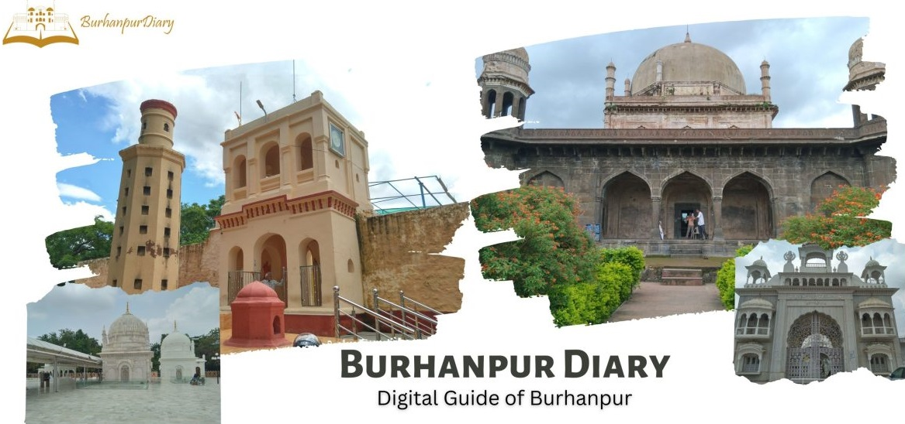
Latest Blog
Read our blog to know more about Burhanpur city’s history , foods, festivals & infrastructure
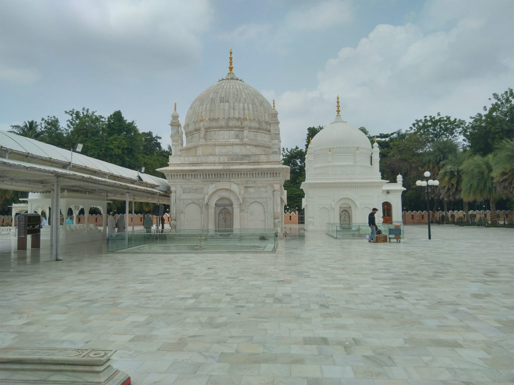
Dargah-E-Hakimi Burhanpur
by admin
February 26, 2023
ABOUT DARGAH-E-HAKIMI BURHANPUR The Dargah-E-Hakimi burhanpur is among the most holy places for Dawoodi Bohra Muslims. Burhanpur in the state of Madhya Pradesh. It was constructed in honor of the famous Saint Syedi Abdulqadir Hakimuddin Maula. Hakim is a Hebrew term that denotes. Consequently, tens thousands Bohras …
Read More »
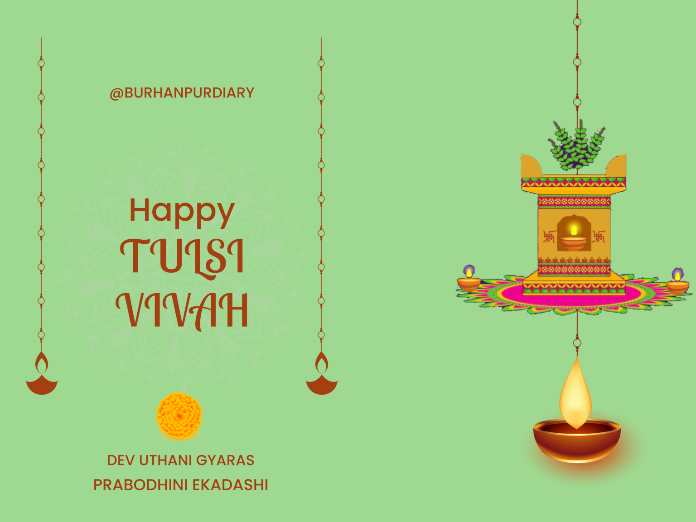
Tulsi Vivah & Dev Uthani Gyaras 1
by admin
November 5, 2022
How The Tulsi Plant Was Born? The Tulsi plant is considered very sacred in the Hindu religion. Tulsi Vivah is celebrated on the day of Kartik Shukla Ekadashi,this day marriedwomen blessings of their happy family Tulsi Mata. Tulsi Mata&Shaligram are married with …
Read More » 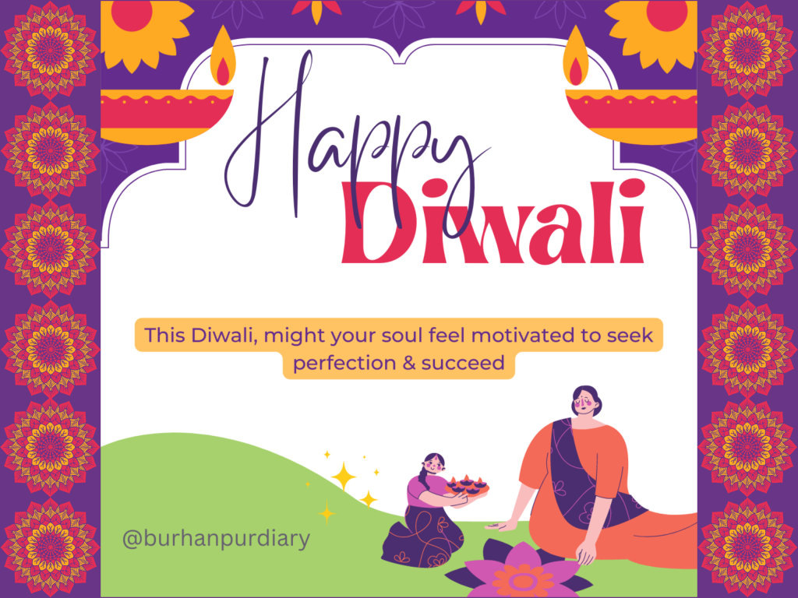 Diwaliby admin
October 24, 2022
Why Diwali or Deepawali is celebrated every year, its importance and history? The festival of Diwali holds great importance in the lives of the people of our country and this festival comes every year in October or November. At the moment folks remove darkness from their homes and worship the …
Read More »
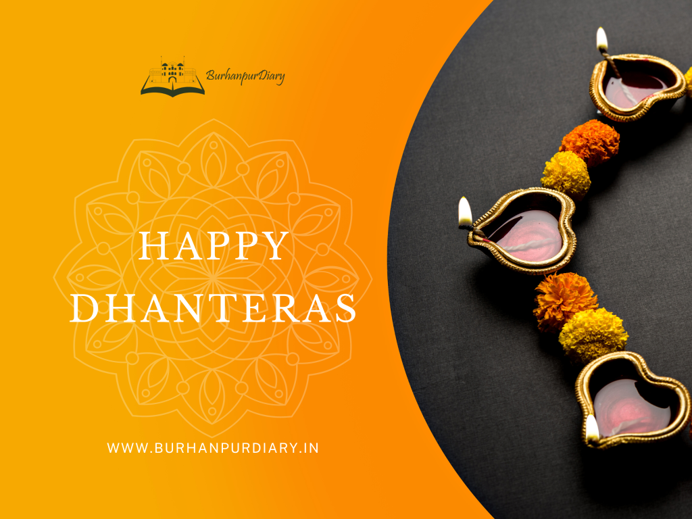
Dhanteras
by admin
October 20, 2022
Do you know what’s the reason behind the celebration of dhanteras? Health has been considered superior to wealth in Indian culture. Before Dhanteras & Diwali commercial environment in Burhanpur, there is a lot of excitement about shopping at the Dhanteras market
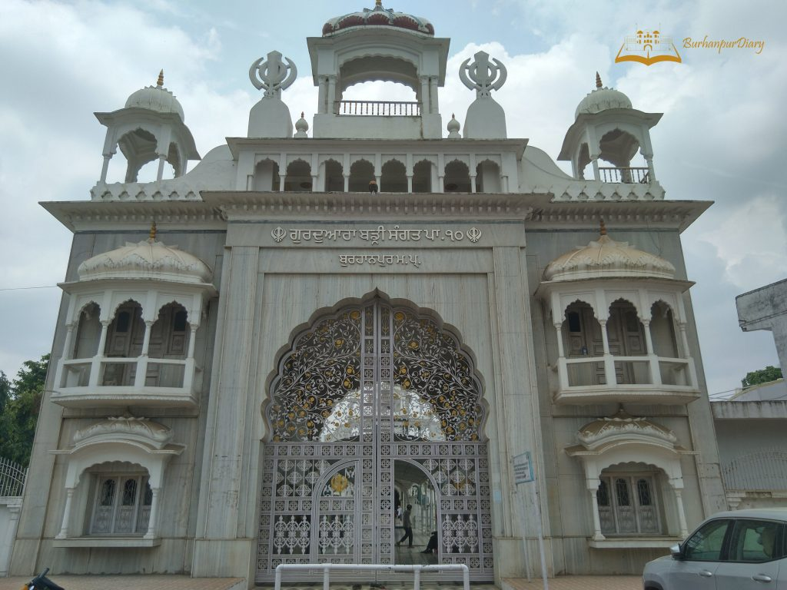
Gurudwara Badi Sangat Burhanpur
by admin
October 16, 2022
Gurudwaras are called Gurudwara Sahib. Gurudwara means the door of the Guru. The center of faith is about 450 years old Where the first Guru of Sikhs Shri Guru Nanak Dev Ji and the tenth Guru Shri Guru Gobind Singh Maharaj had arrived in Burhanpur.
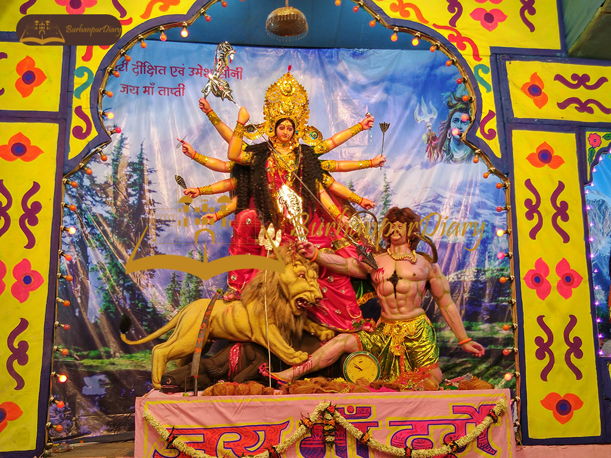
Navratri in Burhanpur District
by admin
September 29, 2022
Navratri is a Sanskrit word that is derived from Nav + Ratri which means nine nights. Navratri is an important festival celebrated by the people of the Hindu religion in India. This festival is celebrated continuously for ten days and its tenth day is known as Dussehra. For these nine nights, nine forms of Maa Durga are worshipped.
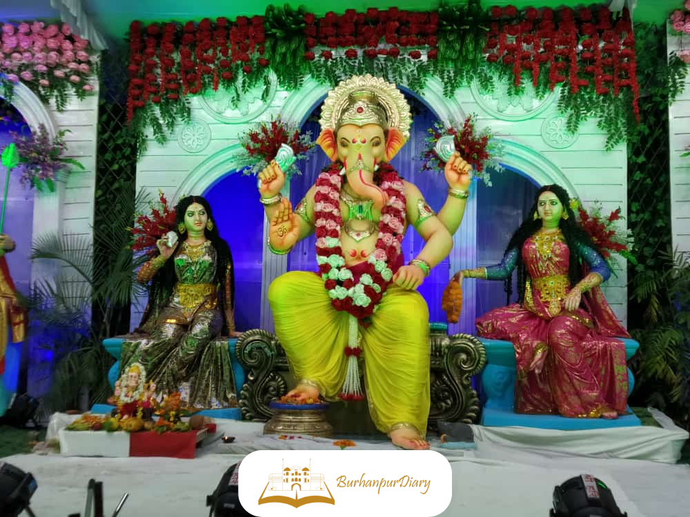
Ganesh Utsav in Burhanpur 2022
by admin
September 10, 2022
Shree Ganesh Ji was born into the world on the Chaturthi of Shukla Paksha of Bhadrapada. To that end consistently Ganesh Chaturthi is commended with satisfaction and delight on this day. The festival of the birthday of Lord Ganesha is known as Ganesh Chaturthi.
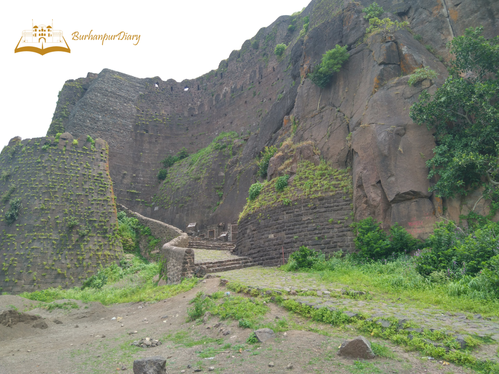
Asirgarh Fort
by admin
September 1, 2022
Asirgarh Fort is a historical & strategically important fort about 20km far from Burhanpur, situated in the Satpura range. Because the fortress passes through the Satpura’s valley of the Narmada & tapti river.
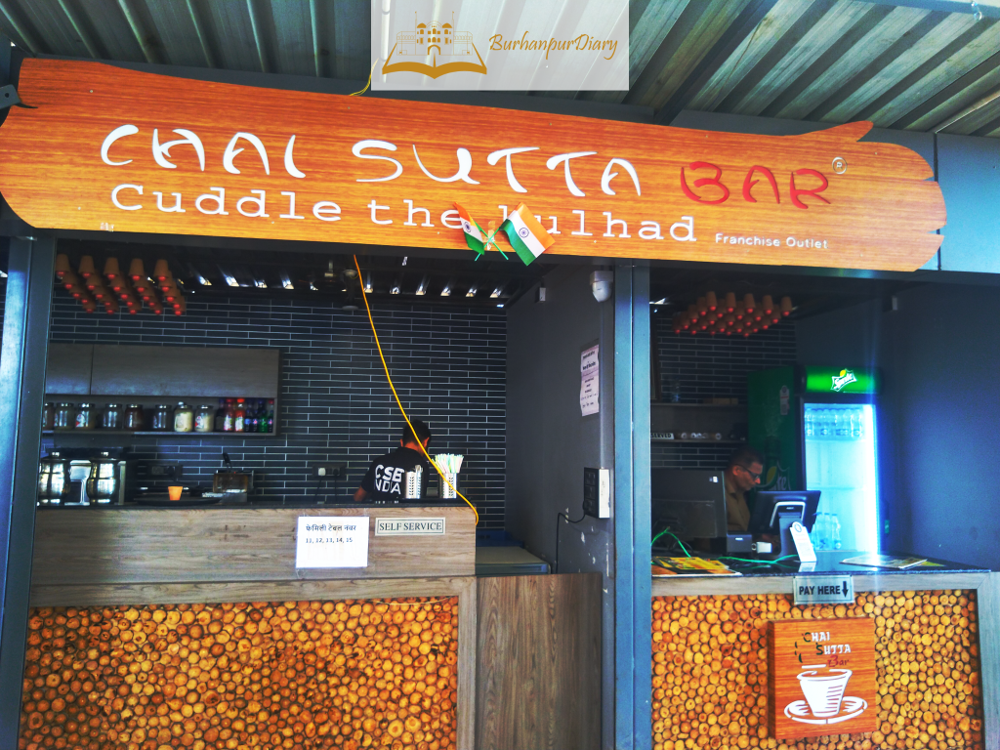
Chai Sutta Bar Burhanpur
by admin
August 25, 2022
CHAI SUTTA BAR is India’s fastest-growing Chai chain. Which started the year back in 2016. The founder of CSB is Anubhav Dubey and Anand Nayak after some time joined by Rahul Patidar.
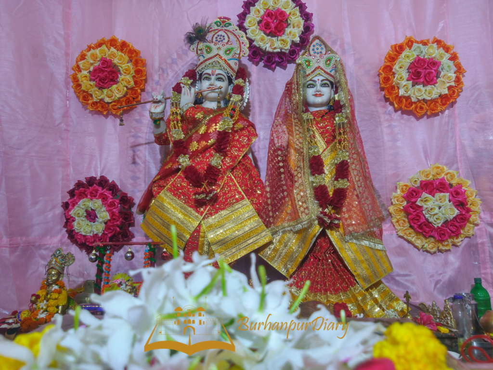
Krishna Janmashtami in Burhanpur
by admin
August 18, 2022
Why celebrate Janmashtami? Krishna Janmashtami is a Hindu festival that celebrating the birth of Lord Krishna on the eighth (Ashtami) day of the dark fortnight of the month of Bhadrapada (Aug–Sep). When Krishna was born, Mathura was ruled by his maternal uncle, King Kansa, who wanted to kill his sister’s …
 Burhanpur The Historical Place
Burhanpur The Historical Place
by admin
August 15, 2022
The historical place Burhanpur in Madhya Pradesh, India, is known to have existed since the era of the Maurya Empire (322–185 BCE). The city, named after Hindu king Burhan Shah, was built on the banks of the Tapti River and served as an important regional center in ancient India, rivaling the kingdom of Malwa.
Digital Guide of Burhanpur
Welcome to Burhanpur Diary. We are a local digital guide for you. Burhanpurdiary
will give a platform for helping for jobs in the local area for employees and
employers too. We are trying to connect the digital presence of our district.
Burhanpur, Madhya Pradesh, 450331, INDIA